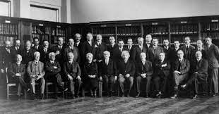
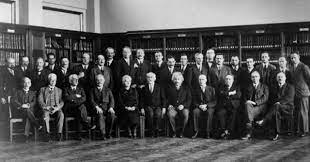

Biographie
Son père, Hermann Einstein, né le 30 août 1847 à Buchau, est mort le 10 octobre
1902 à Milan. Il est entrepreneur (Elektrotechnische Fabrik J. Einstein & Cie) et
épouse Pauline Koch (1858-1920) le 8 août 1876. Trois ans plus tard, le 14 mars
1879, Albert Einstein, leur premier enfant, naît dans leur appartement à Ulm en
Allemagne.
Les Einstein sont des juifs non pratiquants, mais un parent enseigne à Albert les
éléments du judaïsme. Il a vers onze ans une phase très religieuse : il ne mange pas
de porc et compose des chants religieux qu'il chante sur le chemin de l'école. « Mais
je lus mes premiers livres de science, et j'en terminais avec la foi d'Abraham. » Il ne
fait pas son bar-mitzvah et n'apprend pas l'hébreu.
L'intérêt d'Albert pour la science est éveillé par une boussole alors qu'il est âgé de
cinq ans : l'existence d'une action à distance lui paraît « miraculeuse » et l'étonne
très vivement. À douze ans, un petit livre sur la géométrie euclidienne du plan 3, qu'il
nommera plus tard le « livre sacré de la géométrie », le marque fortement (« la clarté
et la certitude des démonstrations eurent sur moi un effet indescriptible »). Son oncle
Jakob, ingénieur associé dans l'entreprise de matériel électrique de son père, lui
pose des problèmes mathématiques. Max Talmey, un étudiant en médecine qui dîne
souvent chez les Einstein, lui offre des livres de science et plus tard des œuvres de
Kant, et ils ont souvent de longues discussions.
 
